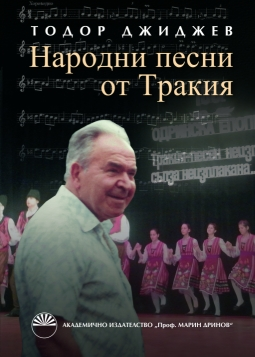

|
 |
|
Тодор Джиджев, Народни
песни от Тракия, съставители: Лозанка Пейчева,
Григор Григоров, редактори: Лозанка Пейчева, Григор
Григоров, Николай Киров, Академично издателство
"Проф. Марин Дринов", София, 2013, (702 стр., диск) Проф. д.изк. Тодор Джиджев Народни песни от Тракия Българска Първо издание Съставители: проф. д.изк. Лозанка Пейчева, гл.ас. д-р Григор Григоров Редактори: проф. д.изк. Лозанка Пейчева, гл.ас. д-р Григор Григоров, доц. д-р Николай Киров Рецензенти: проф. д.ф.н. Анатол Анчев, доц. д-р Наталия Рашкова Художник на корицата: Константин Жеков Предпечат: доц. д-р Николай Киров Аудиотрансфер: гл.ас. д-р Диана Данова-Дамянова, Мария Кумичин-Георгиева Мастеринг на музикалните записи: Александър Нушев Скенер: гл.ас. д-р Диана Данова-Дамянова, Мария Кумичин-Георгиева На сайта на издателството. |
| "Титул и каре" | Кратко съдържане | Съдържание |